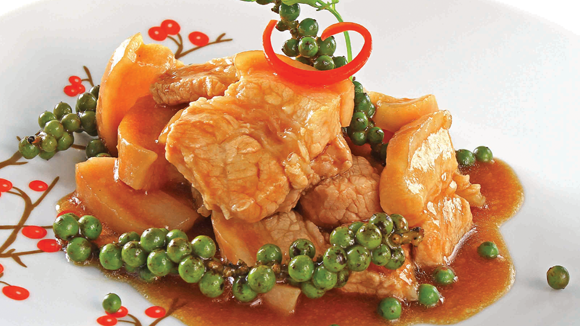

Thịt heo ba chỉ kho tiêu xanh

- Khẩu phần 4
- Chuẩn bị 10 phút
- Thực hiện 15 phút
Nguyên liệu
- 300g thịt ba chỉ
- 100g tiêu xanh
- 1 gói Gia vị hoàn chỉnh Thịt Kho
- 1 thìa cà phê tỏi băm
- 1 thìa súp dầu ăn
Hướng dẫn thực hiện
- Thịt ba chỉ rửa sạch, thái mỏng, ướp với 1 gói Gia vị hoàn chỉnh
Thịt Kho, để khoảng 15 phút cho thấm gia vị
- Làm nóng dầu ăn, phi thơm tỏi băm, cho thịt vào xào sơ cho săn, cho tiêu
xanh vào xào khoảng 5 phút, thêm ít nước lọc xăm xắp mặt cá, để lửa nhỏ, kho
khoảng 20 phút, khi thấy nước sệt lại là được
- Múc thịt ra đĩa, dùng với cơm nóng.